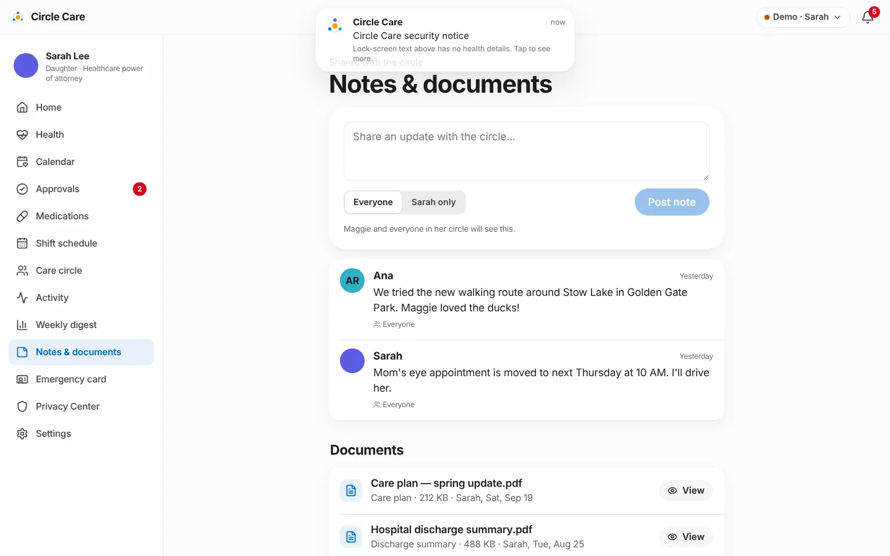

What. A shared notebook for the circle. Anyone allowed can post a note to Everyone or to Sarah only. Documents — care plans, discharge summaries, legal papers — are checked by their real file type, encrypted on the device, and opened in a viewer that watermarks the viewer's name and the time across the page. Every view goes into Maggie's access log.
Why. Care information arrives as scattered texts and paper. Some of it is sensitive (a family concern, a legal document) and should not be visible to everyone; documents copied out of an app are a common source of leaks.
Business value. One place for the circle's context; a defensible model for sensitive documents that agencies and compliance reviewers expect.
Sarah (or Ana while on shift) opens Notes & documents — "Shared with the circle".
She writes in "Share an update with the circle…", picks Everyone or Sarah only, and taps Post note ("Note posted"). The hint explains who will see it.
Notes list shows author, time ("2 days ago") and visibility (Everyone or a lock and Sarah only).
Documents lists each file with type, size, uploader and date, plus Verified, In review or Resubmit badges for legal documents, and View.
To upload, she picks a type (Care plan, Discharge summary, Legal authority (guardian only), Other) and taps Upload. "PDF, PNG or JPEG up to 10 MB. Files are checked, encrypted on this device and shown with the viewer's name watermarked across them. In the full product they're also virus-scanned on our servers."
A wrong file type is rejected: ""fake.pdf" isn't a PDF, PNG or JPEG file. Only those types can be uploaded." A valid file is added ("Document added", or "Sent for verification" for legal authority).
View opens the document with a repeating watermark such as "Sarah · Oct 19, 2026, 4:08 PM". "Watermarked for Sarah · … This view was added to Maggie's access log."

Notes with per-note visibility, and encrypted documents.
"Maggie and everyone in her circle will see this."
Sarah only
The guardian and the note's author
"Only Sarah will see this. Maggie can see notes about her unless Sarah restricts them for a documented reason."
Open design question
The hint above says Maggie can see notes about her, but the permission matrix gives notes.private: read to the guardian only, and the elder app has no Notes screen. This conflicts with "her data, her decision" and possibly a right of access; it is logged as a product decision in the docs index and the permission matrix.
Upload checks (inspectUpload() in src/lib/secureStorage.ts)¶
Check
Rule
Size
≤ 10 MB — "Files must be 10 MB or smaller."
Type
Detected from the file's first bytes, not its name: PDF %PDF (25 50 44 46), PNG (89 50 4E 47), JPEG (FF D8 FF)
Picker filter
.pdf, .png, .jpg, .jpeg
Storage
Encrypted with AES-256-GCM under the device key, a fresh 12-byte IV per file, in IndexedDB circle-care-files
The caregiver's Notes route is wrapped in AccessGuard resource="notes". Off shift Ana sees Available during your shift — "Caregivers see Maggie's care details only while checked in to a shift. Check in from Today to continue." — and the refusal is logged.
Non-guardians do not see legal-authority documents in the list.
CC-67 upload checks file type, encrypts, watermarked viewer (rejects a fake PDF, accepts a 1×1 PNG, watermark contains Sarah) · CC-45 task note; CC-19 notes open once on shift · CC-19 caregiver off shift cannot open notes · CC-33 close circle deletes data and files
Unit
policy.test.ts — notes, notes.private, docs, docs.legal for every role